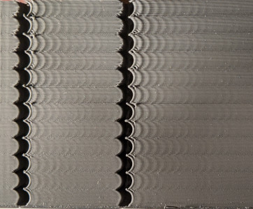
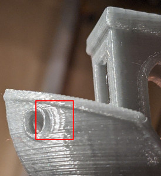
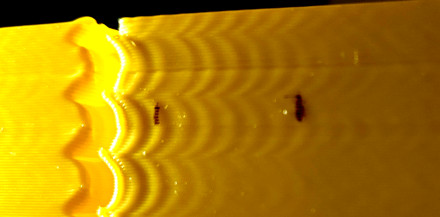
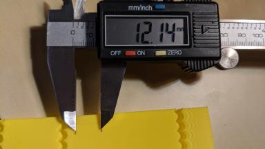
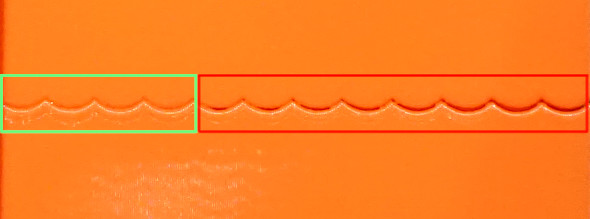

Resonanz-Kompensation¶
Klipper unterstützt Input Shaping - eine Technik, die verwendet werden kann, um Ringing (auch bekannt als Echoing, Ghosting oder Rippling) in Drucken zu reduzieren. Ringing ist ein Fehler beim Flächendruck, bei dem sich typischerweise Elemente wie Kanten als subtiles "Echo" auf einer gedruckten Oberfläche wiederholen:
|

|
|Ringing entsteht durch mechanische Schwingungen im Drucker infolge schneller Richtungswechsel beim Drucken. Beachten Sie, dass Ringing meist mechanische Ursachen hat: ein zu wenig steifer Druckerrahmen, lose oder zu elastische Riemen, Ausrichtungsprobleme mechanischer Bauteile, hohe bewegte Masse usw. Diese sollten nach Möglichkeit zuerst geprüft und behoben werden.
Input Shaping ist ein Steuerungsverfahren ohne Rückführung, das ein Stellsignal erzeugt, welches seine eigenen Schwingungen auslöscht. Input Shaping erfordert vor der Aktivierung einige Abstimmung und Messungen. Neben Ringing reduziert Input Shaping in der Regel Schwingungen und Rütteln des Druckers allgemein und kann auch die Zuverlässigkeit des stealthChop-Modus von Trinamic-Schrittmotortreibern verbessern.
Abstimmung (Tuning)¶
Die grundlegende Abstimmung erfordert, die Ringing-Frequenzen des Druckers durch den Druck eines Testmodells zu messen.
Slicen Sie das Ringing-Testmodell, das Sie unter docs/prints/ringing_tower.stl finden, im Slicer:
- Empfohlene Schichthöhe ist 0,2 oder 0,25 mm.
- Infill und obere Schichten können auf 0 gesetzt werden.
- Verwenden Sie 1-2 Perimeter oder besser noch den Vasenmodus mit 1-2 mm Basis.
- Verwenden Sie für die äußeren Perimeter eine ausreichend hohe Geschwindigkeit von etwa 80-100 mm/s.
- Stellen Sie sicher, dass die minimale Schichtzeit höchstens 3 Sekunden beträgt.
- Stellen Sie sicher, dass jede "dynamische Beschleunigungsregelung" im Slicer deaktiviert ist.
- Drehen Sie das Modell nicht. Das Modell hat auf der Rückseite Markierungen für X und Y. Beachten Sie die ungewöhnliche Lage der Markierungen im Verhältnis zu den Achsen des Druckers - das ist kein Fehler. Die Markierungen können später im Abstimmungsprozess als Referenz dienen, da sie zeigen, welcher Achse die Messungen zuzuordnen sind.
Ringing-Frequenz¶
Messen Sie zunächst die Ringing-Frequenz.
- Wurde der Parameter
square_corner_velocityverändert, setzen Sie ihn auf 5.0 zurück. Bei Verwendung eines Input Shapers wird von einer Erhöhung abgeraten, da sie zu stärkerer Glättung der Teile führen kann - besser ist es, stattdessen einen höheren Beschleunigungswert zu verwenden. - Deaktivieren Sie die Funktion
minimum_cruise_ratio, indem Sie folgenden Befehl ausführen:SET_VELOCITY_LIMIT MINIMUM_CRUISE_RATIO=0 - Pressure Advance deaktivieren:
SET_PRESSURE_ADVANCE ADVANCE=0 - Wenn Sie der printer.cfg bereits einen Abschnitt
[input_shaper]hinzugefügt haben, führen Sie den BefehlSET_INPUT_SHAPER SHAPER_FREQ_X=0 SHAPER_FREQ_Y=0aus. Erhalten Sie den Fehler "Unknown command", können Sie ihn an dieser Stelle bedenkenlos ignorieren und mit den Messungen fortfahren. - Führen Sie den Befehl aus:
TUNING_TOWER COMMAND=SET_VELOCITY_LIMIT PARAMETER=ACCEL START=1500 STEP_DELTA=500 STEP_HEIGHT=5Im Wesentlichen versuchen wir, das Ringing deutlicher hervortreten zu lassen, indem wir für die Beschleunigung unterschiedliche, große Werte setzen. Dieser Befehl erhöht die Beschleunigung alle 5 mm, beginnend bei 1500 mm/s²: 1500 mm/s², 2000 mm/s², 2500 mm/s² und so weiter bis 7000 mm/s² beim letzten Abschnitt. - Drucken Sie das mit den empfohlenen Parametern geslicete Testmodell.
- Sie können den Druck früher abbrechen, wenn das Ringing deutlich sichtbar ist und Sie feststellen, dass die Beschleunigung für Ihren Drucker zu hoch wird (wenn der Drucker z. B. zu stark schwingt oder Schritte zu verlieren beginnt).
-
Nutzen Sie die Markierungen X und Y auf der Rückseite des Modells als Referenz. Die Messungen an der Seite mit der X-Markierung sind für die Konfiguration der X-Achse zu verwenden, die mit der Y-Markierung für die Konfiguration der Y-Achse. Messen Sie den Abstand D (in mm) zwischen mehreren Schwingungen an dem Teil mit der X-Markierung, nahe den Kerben, und lassen Sie dabei möglichst die erste oder die ersten beiden Schwingungen aus. Um den Abstand zwischen den Schwingungen leichter zu messen, markieren Sie die Schwingungen zunächst und messen Sie dann den Abstand zwischen den Markierungen mit einem Lineal oder Messschieber:
|

|
| -
Zählen Sie, wie vielen Schwingungen N der gemessene Abstand D entspricht. Wenn Sie unsicher sind, wie zu zählen ist, orientieren Sie sich am obigen Bild, das N = 6 Schwingungen zeigt.
- Berechnen Sie die Ringing-Frequenz der X-Achse als V · N / D (Hz), wobei V die Geschwindigkeit der äußeren Perimeter ist (mm/s). Im obigen Beispiel haben wir 6 Schwingungen markiert und der Test wurde mit 100 mm/s gedruckt, die Frequenz beträgt also 100 * 6 / 12,14 ≈ 49,4 Hz.
- Führen Sie (8) - (10) auch für die Y-Markierung durch.
Beachten Sie, dass das Ringing auf dem Testdruck dem Muster der gekrümmten Kerben folgen sollte, wie im obigen Bild. Ist das nicht der Fall, handelt es sich bei diesem Defekt nicht wirklich um Ringing, sondern er hat eine andere Ursache - entweder mechanisch oder am Extruder. Diese sollte zuerst behoben werden, bevor Input Shaper aktiviert und abgestimmt werden.
Sind die Messungen unzuverlässig, weil zum Beispiel der Abstand zwischen den Schwingungen nicht gleichmäßig ist, kann das bedeuten, dass der Drucker auf derselben Achse mehrere Resonanzfrequenzen hat. Man kann stattdessen versuchen, dem im Abschnitt Unzuverlässige Messungen der Ringing-Frequenzen beschriebenen Abstimmungsprozess zu folgen, und dennoch von der Input-Shaping-Technik profitieren.
Die Ringing-Frequenz kann von der Position des Modells auf dem Druckbett und von der Z-Höhe abhängen, insbesondere bei Delta-Druckern; Sie können prüfen, ob sich die Frequenzen an verschiedenen Positionen entlang der Seiten des Testmodells und in verschiedenen Höhen unterscheiden. Ist das der Fall, können Sie die mittleren Ringing-Frequenzen über die X- und die Y-Achse berechnen.
Ist die gemessene Ringing-Frequenz sehr niedrig (unter etwa 20-25 Hz), kann es sinnvoll sein, zunächst in eine Versteifung des Druckers oder eine Verringerung der bewegten Masse zu investieren - je nachdem, was in Ihrem Fall möglich ist -, bevor Sie mit der weiteren Abstimmung des Input Shapings fortfahren und die Frequenzen anschließend erneut messen. Für viele verbreitete Druckermodelle gibt es dafür bereits fertige Lösungen.
Beachten Sie, dass sich die Ringing-Frequenzen ändern können, wenn am Drucker Änderungen vorgenommen werden, die die bewegte Masse oder die Steifigkeit des Systems beeinflussen, zum Beispiel:
- Am Druckkopf werden Komponenten montiert, entfernt oder ausgetauscht, die seine Masse verändern, z. B. ein neuer (schwererer oder leichterer) Schrittmotor für einen Direktextruder, ein neues Hotend, ein schwerer Lüfter mit Luftführung usw.
- Die Riemen gespannt sind.
- Es werden Erweiterungen zur Erhöhung der Rahmensteifigkeit montiert.
- An einem Drucker mit bewegtem Bett wird ein anderes Bett eingebaut, Glas ergänzt usw.
Werden solche Änderungen vorgenommen, ist es ratsam, zumindest die Ringing-Frequenzen zu messen, um zu prüfen, ob sie sich verändert haben.
Input shaper Konfiguration¶
Nachdem die Ringing-Frequenzen für die X- und die Y-Achse gemessen wurden, können Sie Ihrer printer.cfg den folgenden Abschnitt hinzufügen:
[input_shaper]
shaper_freq_x: ... # frequency for the X mark of the test model
shaper_freq_y: ... # frequency for the Y mark of the test model
Für das obige Beispiel erhalten wir shaper_freq_x/y = 49.4.
Input shaper Auswählen¶
Klipper unterstützt mehrere Input Shaper. Sie unterscheiden sich in ihrer Empfindlichkeit gegenüber Fehlern bei der Bestimmung der Resonanzfrequenz und darin, wie stark sie die gedruckten Teile glätten. Außerdem sollten manche Shaper wie 2HUMP_EI und 3HUMP_EI in der Regel nicht mit shaper_freq = Resonanzfrequenz verwendet werden - sie werden nach anderen Gesichtspunkten konfiguriert, um mehrere Resonanzen gleichzeitig zu dämpfen.
Für die meisten Drucker sind entweder der MZV- oder der EI-Shaper zu empfehlen. Dieser Abschnitt beschreibt ein Testverfahren, um zwischen beiden zu wählen und einige weitere zugehörige Parameter zu bestimmen.
Drucken Sie das Ringing-Testmodell wie folgt:
- Die Firmware neu starten
RESTART - Vorbereitung für den Test:
SET_VELOCITY_LIMIT MINIMUM_CRUISE_RATIO=0 - Pressure Advance deaktivieren:
SET_PRESSURE_ADVANCE ADVANCE=0 - Führe:
SET_INPUT_SHAPER SHAPER_TYPE=MZVaus - Führen Sie den Befehl aus:
TUNING_TOWER COMMAND=SET_VELOCITY_LIMIT PARAMETER=ACCEL START=1500 STEP_DELTA=500 STEP_HEIGHT=5 - Drucken Sie das mit den empfohlenen Parametern geslicete Testmodell.
Wenn Sie an dieser Stelle kein Ringing feststellen, ist der MZV-Shaper für den Einsatz zu empfehlen.
Stellen Sie doch Ringing fest, messen Sie die Frequenzen mit den Schritten (8)-(10) aus dem Abschnitt Ringing-Frequenz erneut. Weichen die Frequenzen deutlich von den zuvor ermittelten Werten ab, ist eine komplexere Input-Shaper-Konfiguration erforderlich. Sehen Sie dazu die technischen Details im Abschnitt Input Shaper. Andernfalls fahren Sie mit dem nächsten Schritt fort.
Probieren Sie nun den EI-Input-Shaper aus. Wiederholen Sie dazu die Schritte (1)-(6) von oben, führen Sie jedoch in Schritt 4 stattdessen folgenden Befehl aus: SET_INPUT_SHAPER SHAPER_TYPE=EI.
Vergleichen Sie zwei Drucke mit MZV- und mit EI-Input-Shaper. Liefert EI deutlich bessere Ergebnisse als MZV, verwenden Sie den EI-Shaper, andernfalls ist MZV vorzuziehen. Beachten Sie, dass der EI-Shaper die gedruckten Teile stärker glättet (weitere Einzelheiten im nächsten Abschnitt). Fügen Sie dem Abschnitt [input_shaper] den Parameter shaper_type: mzv (oder ei) hinzu, z. B.:
[input_shaper]
shaper_freq_x: ...
shaper_freq_y: ...
shaper_type: mzv
Ein paar Notizen zur "shaper" auswahl:
- Der EI-Shaper kann für Drucker mit bewegtem Bett besser geeignet sein (sofern Resonanzfrequenz und resultierende Glättung es zulassen): Da auf dem bewegten Bett immer mehr Filament abgelegt wird, steigt dessen Masse und die Resonanzfrequenz sinkt. Weil der EI-Shaper robuster gegenüber Änderungen der Resonanzfrequenz ist, kann er beim Druck großer Teile besser funktionieren.
- Aufgrund der Eigenheiten der Delta-Kinematik können die Resonanzfrequenzen in verschiedenen Bereichen des Bauraums stark voneinander abweichen. Daher kann der EI-Shaper für Delta-Drucker besser geeignet sein als MZV oder ZV und sollte in Betracht gezogen werden. Ist die Resonanzfrequenz ausreichend hoch (mehr als 50-60 Hz), kann man sogar den 2HUMP_EI-Shaper testen (indem man den oben vorgeschlagenen Test mit
SET_INPUT_SHAPER SHAPER_TYPE=2HUMP_EIausführt); prüfen Sie vor der Aktivierung jedoch die Hinweise im Abschnitt weiter unten.
Auswahl von max_accel¶
Sie sollten bereits einen gedruckten Test für den im vorherigen Schritt gewählten Shaper haben (falls nicht, drucken Sie das mit den empfohlenen Parametern geslicete Testmodell mit deaktiviertem Pressure Advance SET_PRESSURE_ADVANCE ADVANCE=0 und aktiviertem Tuning Tower als TUNING_TOWER COMMAND=SET_VELOCITY_LIMIT PARAMETER=ACCEL START=1500 STEP_DELTA=500 STEP_HEIGHT=5). Beachten Sie, dass bei sehr hohen Beschleunigungen, abhängig von der Resonanzfrequenz und dem gewählten Input Shaper (z. B. erzeugt der EI-Shaper mehr Glättung als MZV), Input Shaping zu übermäßiger Glättung und Verrundung der Teile führen kann. max_accel sollte daher so gewählt werden, dass dies verhindert wird. Ein weiterer Parameter, der die Glättung beeinflussen kann, ist square_corner_velocity; es wird daher nicht empfohlen, diesen über den Standardwert von 5 mm/s zu erhöhen, um eine erhöhte Glättung zu vermeiden.
Um einen geeigneten Wert für max_accel zu wählen, begutachten Sie das Modell für den gewählten Input Shaper. Halten Sie zunächst fest, bei welcher Beschleunigung das Ringing noch gering ist - also für Sie akzeptabel.
Prüfen Sie anschließend die Glättung. Dafür hat das Testmodell einen kleinen Spalt in der Wand (0,15 mm):
Mit steigender Beschleunigung nimmt die Glättung zu und der tatsächliche Spalt im Druck wird breiter:

In diesem Bild nimmt die Beschleunigung von links nach rechts zu, und der Spalt beginnt ab 3500 mm/s^2 zu wachsen (fünftes Band von links). Ein guter Wert für max_accel ist in diesem Fall also 3000 (mm/s^2), um übermäßige Glättung zu vermeiden.
Halten Sie die Beschleunigung fest, bei der der Spalt in Ihrem Testdruck noch sehr klein ist. Sehen Sie Wülste, aber selbst bei hohen Beschleunigungen überhaupt keinen Spalt in der Wand, kann das an deaktiviertem Pressure Advance liegen, insbesondere bei Bowden-Extrudern. Wiederholen Sie den Druck in diesem Fall mit aktiviertem PA. Es kann auch die Folge eines falsch kalibrierten (zu hohen) Filamentflusses sein; das sollten Sie ebenfalls prüfen.
Wählen Sie den kleineren der beiden Beschleunigungswerte (aus Ringing und Glättung) und tragen Sie ihn als max_accel in die printer.cfg ein.
Als Hinweis: Es kann vorkommen - insbesondere bei niedrigen Ringing-Frequenzen -, dass der EI-Shaper selbst bei niedrigeren Beschleunigungen zu viel Glättung verursacht. In diesem Fall kann MZV die bessere Wahl sein, da er höhere Beschleunigungswerte erlaubt.
Bei sehr niedrigen Ringing-Frequenzen (etwa 25 Hz und darunter) kann selbst der MZV-Shaper zu viel Glättung erzeugen. Ist das der Fall, können Sie die Schritte im Abschnitt Auswahl des Input Shapers auch mit dem ZV-Shaper wiederholen, indem Sie stattdessen den Befehl SET_INPUT_SHAPER SHAPER_TYPE=ZV verwenden. Der ZV-Shaper sollte noch weniger Glättung erzeugen als MZV, reagiert jedoch empfindlicher auf Fehler bei der Messung der Ringing-Frequenzen.
Weiter ist zu bedenken: Ist eine Resonanzfrequenz zu niedrig (unter 20-25 Hz), kann es sinnvoll sein, die Steifigkeit des Druckers zu erhöhen oder die bewegte Masse zu verringern. Andernfalls können Beschleunigung und Druckgeschwindigkeit nun statt durch Ringing durch zu starke Glättung begrenzt sein.
Feinabstimmung der Resonanzfrequenzen¶
Beachten Sie, dass die Genauigkeit der mit dem Ringing-Testmodell ermittelten Resonanzfrequenzen für die meisten Zwecke ausreicht; eine weitergehende Abstimmung wird daher nicht empfohlen. Wenn Sie Ihre Ergebnisse dennoch gegenprüfen möchten (z. B. weil Sie nach dem Druck eines Testmodells mit dem gewählten Input Shaper und den zuvor gemessenen Frequenzen weiterhin Ringing sehen), können Sie die Schritte in diesem Abschnitt befolgen. Beachten Sie: Wenn Sie nach dem Aktivieren von [input_shaper] Ringing bei anderen Frequenzen feststellen, hilft dieser Abschnitt nicht weiter.
Unter der Annahme, dass Sie das Ringing-Modell mit den empfohlenen Parametern gesliced haben, führen Sie für jede der Achsen X und Y folgende Schritte durch:
- Vorbereitung für den Test:
SET_VELOCITY_LIMIT MINIMUM_CRUISE_RATIO=0 - Vergewissern Sie sich, dass Pressure Advance deaktiviert ist:
SET_PRESSURE_ADVANCE ADVANCE=0 - Führe:
SET_INPUT_SHAPER SHAPER_TYPE=ZVaus - Wählen Sie aus dem vorhandenen Ringing-Testmodell mit dem von Ihnen gewählten Input Shaper die Beschleunigung, bei der Ringing ausreichend deutlich sichtbar ist, und setzen Sie sie mit:
SET_VELOCITY_LIMIT ACCEL=... - Berechnen Sie die für den Befehl
TUNING_TOWERerforderlichen Parameter zur Abstimmung vonshaper_freq_xwie folgt: start = shaper_freq_x * 83 / 132 und factor = shaper_freq_x / 66, wobeishaper_freq_xhier der aktuelle Wert aus derprinter.cfgist. - Führen Sie den Befehl aus:
TUNING_TOWER COMMAND=SET_INPUT_SHAPER PARAMETER=SHAPER_FREQ_X START=start FACTOR=factor BAND=5unter Verwendung der in Schritt (5) berechneten Werte fürstartundfactor. - Drucken Sie das Testmodell.
- Setzen Sie den ursprünglichen Frequenzwert zurück:
SET_INPUT_SHAPER SHAPER_FREQ_X=.... - Suchen Sie das Band mit dem geringsten Ringing und zählen Sie seine Nummer von unten beginnend bei 1.
- Berechnen Sie den neuen Wert für shaper_freq_x über alter shaper_freq_x * (39 + 5 * Bandnummer) / 66.
Wiederholen Sie diese Schritte in gleicher Weise für die Y-Achse und ersetzen Sie dabei die Bezüge auf die X-Achse durch die Y-Achse (ersetzen Sie also in den Formeln und im Befehl TUNING_TOWER shaper_freq_x durch shaper_freq_y).
Nehmen wir als Beispiel an, Sie hätten für eine der Achsen eine Ringing-Frequenz von 45 Hz gemessen. Daraus ergeben sich für den Befehl TUNING_TOWER die Werte start = 45 * 83 / 132 = 28.30 und factor = 45 / 66 = 0.6818. Nehmen wir weiter an, dass nach dem Druck des Testmodells das vierte Band von unten das geringste Ringing zeigt. Daraus ergibt sich der aktualisierte Wert shaper_freq_? von 45 * (39 + 5 * 4) / 66 ≈ 40,23.
Nachdem beide neuen Parameter shaper_freq_x und shaper_freq_y berechnet wurden, können Sie den Abschnitt [input_shaper] in der printer.cfg mit den neuen Werten für shaper_freq_x und shaper_freq_y aktualisieren.
Pressure Advance¶
Falls Sie Pressure Advance verwenden, muss dieses möglicherweise neu kalibriert werden. Folgen Sie den Anweisungen, um den neuen Wert zu ermitteln, falls er vom vorherigen abweicht. Starten Sie Klipper vor der Kalibrierung von Pressure Advance unbedingt neu.
Unzuverlässige Messungen der Ringing-Frequenzen¶
Wenn Sie die Ringing-Frequenzen nicht messen können, etwa weil der Abstand zwischen den Schwingungen nicht gleichmäßig ist, können Sie Input-Shaping-Techniken möglicherweise dennoch nutzen; die Ergebnisse sind jedoch unter Umständen nicht so gut wie bei sauberen Messungen und erfordern etwas mehr Abstimmung und weitere Testdrucke. Eine weitere Möglichkeit ist, einen Beschleunigungssensor zu beschaffen, zu installieren und die Resonanzen damit zu messen (siehe die Dokumentation zur benötigten Hardware und zum Einrichtungsablauf) - diese Variante erfordert allerdings etwas Crimpen und Löten.
Fügen Sie zur Kalibrierung einen leeren Abschnitt [input_shaper] zu Ihrer printer.cfg hinzu. Unter der Annahme, dass Sie das Ringing-Modell mit den empfohlenen Parametern gesliced haben, drucken Sie das Testmodell anschließend wie folgt dreimal. Führen Sie vor dem ersten Druck Folgendes aus
RESTARTSET_VELOCITY_LIMIT MINIMUM_CRUISE_RATIO=0SET_PRESSURE_ADVANCE ADVANCE=0SET_INPUT_SHAPER SHAPER_TYPE=2HUMP_EI SHAPER_FREQ_X=60 SHAPER_FREQ_Y=60TUNING_TOWER COMMAND=SET_VELOCITY_LIMIT PARAMETER=ACCEL START=1500 STEP_DELTA=500 STEP_HEIGHT=5
und drucken Sie das Modell. Drucken Sie das Modell anschließend erneut, führen Sie vor dem Druck jedoch stattdessen Folgendes aus
SET_INPUT_SHAPER SHAPER_TYPE=2HUMP_EI SHAPER_FREQ_X=50 SHAPER_FREQ_Y=50TUNING_TOWER COMMAND=SET_VELOCITY_LIMIT PARAMETER=ACCEL START=1500 STEP_DELTA=500 STEP_HEIGHT=5
Drucken Sie das Modell dann ein drittes Mal, führen Sie nun jedoch Folgendes aus
SET_INPUT_SHAPER SHAPER_TYPE=2HUMP_EI SHAPER_FREQ_X=40 SHAPER_FREQ_Y=40TUNING_TOWER COMMAND=SET_VELOCITY_LIMIT PARAMETER=ACCEL START=1500 STEP_DELTA=500 STEP_HEIGHT=5
Im Kern drucken wir das Ringing-Testmodell mit TUNING_TOWER und dem 2HUMP_EI-Shaper mit shaper_freq = 60 Hz, 50 Hz und 40 Hz.
Zeigt keines der Modelle eine Verbesserung beim Ringing, sieht es leider nicht danach aus, als könnten Input-Shaping-Techniken in Ihrem Fall helfen.
Andernfalls kann es sein, dass alle Modelle kein Ringing zeigen oder einige mehr und andere weniger. Wählen Sie das Testmodell mit der höchsten Frequenz, das noch eine deutliche Verbesserung beim Ringing zeigt. Zeigen zum Beispiel die Modelle mit 40 Hz und 50 Hz nahezu kein Ringing, das Modell mit 60 Hz jedoch bereits wieder etwas mehr, bleiben Sie bei 50 Hz.
Prüfen Sie nun, ob der EI-Shaper in Ihrem Fall ausreichend wäre. Wählen Sie die Frequenz des EI-Shapers anhand der von Ihnen gewählten Frequenz des 2HUMP_EI-Shapers:
- Für den 2HUMP_EI-Shaper mit 60 Hz verwenden Sie den EI-Shaper mit shaper_freq = 50 Hz.
- Für den 2HUMP_EI-Shaper mit 50 Hz verwenden Sie den EI-Shaper mit shaper_freq = 40 Hz.
- Für den 2HUMP_EI-Shaper mit 40 Hz verwenden Sie den EI-Shaper mit shaper_freq = 33 Hz.
Drucken Sie nun das Testmodell ein weiteres Mal und führen Sie dabei Folgendes aus
SET_INPUT_SHAPER SHAPER_TYPE=EI SHAPER_FREQ_X=... SHAPER_FREQ_Y=...TUNING_TOWER COMMAND=SET_VELOCITY_LIMIT PARAMETER=ACCEL START=1500 STEP_DELTA=500 STEP_HEIGHT=5
wobei Sie shaper_freq_x=... und shaper_freq_y=... wie zuvor ermittelt angeben.
Liefert der EI-Shaper sehr vergleichbar gute Ergebnisse wie der 2HUMP_EI-Shaper, bleiben Sie beim EI-Shaper und der zuvor ermittelten Frequenz; andernfalls verwenden Sie den 2HUMP_EI-Shaper mit der entsprechenden Frequenz. Tragen Sie die Ergebnisse in die printer.cfg ein, z. B.:
[input_shaper]
shaper_freq_x: 50
shaper_freq_y: 50
shaper_type: 2hump_ei
Setzen Sie die Abstimmung mit dem Abschnitt Auswahl von max_accel fort.
Fehlerbehebung und FAQ¶
Ich erhalte keine zuverlässigen Messungen der Resonanzfrequenzen¶
Vergewissern Sie sich zunächst, dass es sich nicht um ein anderes Problem des Druckers statt um Ringing handelt. Sind die Messungen unzuverlässig, weil zum Beispiel der Abstand zwischen den Schwingungen nicht gleichmäßig ist, kann das bedeuten, dass der Drucker auf derselben Achse mehrere Resonanzfrequenzen hat. Man kann dem im Abschnitt Unzuverlässige Messungen der Ringing-Frequenzen beschriebenen Abstimmungsprozess folgen und dennoch von der Input-Shaping-Technik profitieren. Eine weitere Möglichkeit ist, einen Beschleunigungssensor zu installieren, die Resonanzen damit zu messen und den Input Shaper anhand dieser Messergebnisse automatisch abzustimmen.
Nach dem Aktivieren von [input_shaper] werden meine Druckteile zu stark geglättet und feine Details gehen verloren¶
Beachten Sie die Hinweise im Abschnitt Auswahl von max_accel. Ist die Resonanzfrequenz niedrig, sollte man max_accel nicht zu hoch setzen und den Parameter square_corner_velocity nicht erhöhen. Zudem kann es besser sein, den MZV- oder sogar den ZV-Shaper dem EI-Shaper (bzw. 2HUMP_EI und 3HUMP_EI) vorzuziehen.
Nachdem ich einige Zeit erfolgreich ohne Ringing gedruckt habe, scheint es zurückzukehren¶
Es ist möglich, dass sich die Resonanzfrequenzen nach einiger Zeit verändert haben. Vielleicht hat sich zum Beispiel die Riemenspannung verändert (die Riemen sind lockerer geworden) usw. Es ist ratsam, die Ringing-Frequenzen wie im Abschnitt Ringing-Frequenz beschrieben erneut zu prüfen und zu messen und die Konfigurationsdatei bei Bedarf zu aktualisieren.
Wird ein Aufbau mit zwei Schlitten (Dual Carriage) mit Input Shapern unterstützt?¶
Ja. In diesem Fall sollten die Resonanzen für jeden Schlitten zweimal gemessen werden. Ist beispielsweise der zweite (Dual-)Schlitten auf der X-Achse installiert, ist es möglich, für die X-Achse unterschiedliche Input Shaper für den primären und den Dual-Schlitten festzulegen. Der Input Shaper für die Y-Achse sollte jedoch für beide Schlitten gleich sein (da diese Achse letztlich von einem oder mehreren Schrittmotoren angetrieben wird, die jeweils exakt dieselben Schritte ausführen). Eine Möglichkeit, den Input Shaper für solche Konfigurationen einzurichten, besteht darin, den Abschnitt [input_shaper] leer zu lassen und zusätzlich einen Abschnitt [delayed_gcode] wie folgt in der printer.cfg zu definieren:
[input_shaper]
# Intentionally empty
[delayed_gcode init_shaper]
initial_duration: 0.1
gcode:
SET_DUAL_CARRIAGE CARRIAGE=1
SET_INPUT_SHAPER SHAPER_TYPE_X=<dual_carriage_shaper> SHAPER_FREQ_X=<dual_carriage_freq> SHAPER_TYPE_Y=<y_shaper> SHAPER_FREQ_Y=<y_freq>
SET_DUAL_CARRIAGE CARRIAGE=0
SET_INPUT_SHAPER SHAPER_TYPE_X=<primary_carriage_shaper> SHAPER_FREQ_X=<primary_carriage_freq> SHAPER_TYPE_Y=<y_shaper> SHAPER_FREQ_Y=<y_freq>
Anwender der generic_cartesian-Kinematik sollten jedoch Schlittennamen in den CARRIAGE=-Parametern von SET_DUAL_CARRIAGE angeben statt deren Nummern. Beachten Sie, dass SHAPER_TYPE_Y und SHAPER_FREQ_Y in beiden Befehlen identisch sein sollten. Falls Sie einen Input Shaper für die Z-Achse konfigurieren müssen, geben Sie dessen Parameter in beiden SET_INPUT_SHAPER-Befehlen an.
Neben delayed_gcode ist es auch möglich, einen ähnlichen Codeschnipsel in den Start-G-Code im Slicer einzufügen; in diesem Fall wird der Shaper jedoch erst aktiviert, wenn ein Druck gestartet wird.
Beachten Sie, dass der Input Shaper nur einmal konfiguriert werden muss. Spätere Änderungen der Schlitten oder ihrer Modi über den Befehl SET_DUAL_CARRIAGE behalten die konfigurierten Input-Shaper-Parameter bei.
Beeinflusst input_shaper die Druckzeit?¶
Nein, die Funktion input_shaper hat für sich genommen praktisch keinen Einfluss auf die Druckzeiten. Der Wert von max_accel hat ihn allerdings sehr wohl (die Abstimmung dieses Parameters ist in diesem Abschnitt beschrieben).
Sollte ich den Input Shaper für die Z-Achse aktivieren und kalibrieren?¶
Die meisten Anwender werden im Gegensatz zu den X- und Y-Shapern wahrscheinlich keine direkte Verbesserung der Druckqualität feststellen. Anwender von Delta-Druckern, Druckern mit fliegendem Portal oder Druckern mit schweren beweglichen Betten können jedoch möglicherweise die Kinematikgrenzwerte max_z_accel und max_z_velocity erhöhen und so schnellere Z-Bewegungen erzielen. Dies kann besonders bei Werkzeugwechslern nützlich sein, aber auch, wenn im Slicer Z-Hops aktiviert sind. Im Allgemeinen berichten viele Anwender nach Aktivierung des Z-Input-Shapers von einem ruhigeren Lauf der Z-Achse, was den Betriebskomfort des Druckers erhöhen und die Lebensdauer der Z-Achsen-Komponenten etwas verlängern kann.
Technische Details¶
Input shapers¶
Dieser Abschnitt bietet einen kurzen Überblick über einige technische Aspekte der unterstützten Input Shaper. Die in Klipper verwendeten Input Shaper sind mit Ausnahme von MZV recht standardmäßig; eine ausführlichere Übersicht findet sich in den Artikeln, die die jeweiligen Shaper beschreiben.
MZV steht für einen Modified-ZV-Input-Shaper. Die klassische Definition des ZV-Shapers geht von zwei Impulsen und einer Gesamtdauer t aus, die 1/2 der gedämpften Schwingungsperiode Td entspricht. Es ist jedoch möglich, eine verallgemeinerte Form des ZV-Input-Shapers mit n >= 3 Impulsen und einer beliebigen Gesamtdauer t >= 0.5 * Td zu konstruieren (wobei das Maximum von t vom Wert n abhängt) - siehe beispielsweise die SNA-ZV- und MIS-ZV-Input-Shaper, die als Spezialfälle einer allgemeineren Implementierung des MZV-Input-Shapers in Klipper betrachtet werden können. Die Standardparameter von MZV in Klipper sind n=3, t=0.75 (von Td); dieser Shaper wurde als Zwischenstufe zwischen ZV und ZVD entwickelt und bietet eine bessere Schwingungsunterdrückung als ZV, wenn die ermittelten (gemessenen) Shaper-Parameter von den tatsächlich benötigten Werten des Druckers abweichen, sowie eine geringere Glättung als ZVD. Seine spezifische Dauer t=0.75 liegt effektiv genau zwischen ZV (mit t=0.5 von Td) und ZVD (t=1 von Td) und funktioniert bei vielen realen 3D-Druckern gut. Erfahrene Anwender können jedoch die Standardparameter des MZV-Input-Shapers anpassen und andere Varianten ausprobieren, die für ihren spezifischen Drucker besser geeignet sein könnten (diese abweichenden Varianten werden z. B. als mzv(n=3,t=0.8) oder mzv(n=5,t=1.1) im Abschnitt [input_shaper] oder als Parameter des Befehls SET_INPUT_SHAPER angegeben, ebenso als Parameter für das Skript ~/klipper/scripts/calibrate_shaper.py, z. B. als --shapers='2hump_ei,3hump_ei,mzv(n=6,t=1.0)'). Diese benutzerdefinierten Shaper-Parameter werden auch vom Skript ~/klipper/scripts/graph_shaper.py über z. B. den Parameter --shaper='mzv(n=3,t=0.6666666666)' unterstützt.
Die folgende Tabelle zeigt einige (meist ungefähre) Parameter jedes Shapers mit ihren Standardwerten.
| Input shaper |
Shaper duration |
Vibrationsreduzierung 20x (5% Vibrationstoleranz) |
Vibrationsreduzierung 10x (10% Vibrationstoleranz) |
|---|---|---|---|
| ZV | 0.5 / shaper_freq | N/A | ± 5% shaper_freq |
| MZV | 0.75 / shaper_freq | ± 4% shaper_freq | -10%...+15% shaper_freq |
| ZVD | 1 / shaper_freq | ± 15% shaper_freq | ± 22% shaper_freq |
| EI | 1 / shaper_freq | ± 20% shaper_freq | ± 25% shaper_freq |
| 2HUMP_EI | 1.5 / shaper_freq | -40...+45% shaper_freq | -45..+50% shaper_freq |
| 3HUMP_EI | 2 / shaper_freq | -50...+60% shaper_freq | -55%...+65% shaper_freq |
Ein Hinweis zur Schwingungsreduzierung: Die Werte in der obigen Tabelle sind Näherungswerte. Ist das Dämpfungsverhältnis des Druckers für jede Achse bekannt, kann der Shaper präziser konfiguriert werden und reduziert die Resonanzen dann über einen etwas breiteren Frequenzbereich. Das Dämpfungsverhältnis ist jedoch üblicherweise unbekannt und ohne spezielle Ausrüstung schwer zu schätzen, weshalb Klipper standardmäßig den Wert 0,1 verwendet, der einen guten Allround-Wert darstellt. Die Frequenzbereiche in der Tabelle decken eine Reihe unterschiedlicher möglicher Dämpfungsverhältnisse um diesen Wert herum ab (ca. von 0,075 bis 0,15).
Beachten Sie außerdem, dass EI, 2HUMP_EI und 3HUMP_EI darauf abgestimmt sind, Schwingungen auf 5% zu reduzieren; die Werte für 10% Schwingungstoleranz dienen daher nur als Referenz. Ein Anwender kann jedoch, ähnlich wie beim MZV-Input-Shaper, eine gewünschte Schwingungstoleranz für den EI-Input-Shaper erzwingen, z. B. als ei(v_tol=0.02) oder ei(v_tol=0.1); in diesem Fall unterscheidet sich der Bereich der Schwingungsreduzierung.
Verwendung dieser Tabelle:
- Die Dauer des Shapers beeinflusst die Glättung der Teile - je größer sie ist, desto stärker werden die Teile geglättet. Dieser Zusammenhang ist nicht linear, vermittelt aber ein Gefühl dafür, welche Shaper bei gleicher Frequenz stärker glätten. Sortiert nach zunehmender Glättung: ZV < MZV < ZVD ≈ EI < 2HUMP_EI < 3HUMP_EI. Außerdem ist es bei den Shapern 2HUMP_EI und 3HUMP_EI selten sinnvoll, shaper_freq = Resonanzfrequenz zu setzen (sie sollten dazu dienen, Schwingungen bei mehreren Frequenzen zu reduzieren).
- Man kann den Frequenzbereich abschätzen, in dem der Shaper Schwingungen reduziert. So reduziert zum Beispiel MZV mit shaper_freq = 35 Hz die Schwingungen im Bereich [33,6; 36,4] Hz auf 5 %. 3HUMP_EI mit shaper_freq = 50 Hz reduziert die Schwingungen im Bereich [27,5; 75] Hz auf 5 %.
- Anhand dieser Tabelle lässt sich prüfen, welcher Shaper verwendet werden sollte, wenn Schwingungen bei mehreren Frequenzen reduziert werden müssen. Hat man beispielsweise Resonanzen bei 35 Hz und 60 Hz auf derselben Achse: a) Der EI-Shaper benötigt shaper_freq = 35 / (1 - 0.2) = 43,75 Hz und reduziert Resonanzen bis 43,75 * (1 + 0.2) = 52,5 Hz - das reicht also nicht aus; b) Der 2HUMP_EI-Shaper benötigt shaper_freq = 35 / (1 - 0.4) = 58,3 Hz und reduziert Schwingungen bis 58,3 * (1 + 0.45) = 84,5 Hz - dies ist also eine akzeptable Konfiguration. Versuchen Sie stets, für einen gegebenen Shaper eine möglichst hohe shaper_freq zu verwenden (eventuell mit etwas Sicherheitsspanne - in diesem Beispiel wäre shaper_freq ≈ 55 Hz am besten geeignet), und versuchen Sie, einen Shaper mit möglichst geringer Shaper-Dauer zu verwenden.
- Muss man Schwingungen bei mehreren sehr unterschiedlichen Frequenzen reduzieren (etwa 30 Hz und 100 Hz), reichen die Angaben in der obigen Tabelle möglicherweise nicht aus. In diesem Fall kommt man mit dem flexibleren Skript scripts/graph_shaper.py eher zum Ziel.